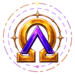

Código Aberto
Transparência AGPL-3.0
Todo o código-fonte das extensões, da plataforma web, do daemon de ingestão e das automações é público e auditável na organização ProjectNox-org.

Ecossistema gratuito e de código aberto sob licença AGPL-3.0 que reúne plataforma web de leitura de mangás, extensões oficiais para Mihon e Aniyomi, pipelines automatizados e acompanhamento transparente de demandas da comunidade.
Criado por Awerkori, o Project Nox nasceu para oferecer uma infraestrutura confiável, aberta e bem documentada para leitura de mangás e consumo de animes pela comunidade lusófona.
Todo o código-fonte das extensões, da plataforma web, do daemon de ingestão e das automações é público e auditável na organização ProjectNox-org.
Leitura web renderizada no Edge via Cloudflare Workers e catálogos móveis distribuídos em Protobuf binário (index.pb) com legado JSON sincronizado.
Solicitações de novas extensões, correções de bugs e mudanças de domínio são organizadas via GitHub Issues e acompanhadas em tempo real no Tracker.
Cada projeto possui responsabilidade bem definida e repositório dedicado dentro da organização ProjectNox-org.
Leitor web oficial em SvelteKit com SSR no Edge via Cloudflare Workers, persistência em YugabyteDB (YSQL) via Hyperdrive e entrega de mídia particionada via Telegram Bot API.
project-nox-manga.project-nox-awerkori.workers.dev.Catálogo compilado e assinado para leitores móveis compatíveis (Mihon e forks), com pipeline automatizado a partir das fontes em Kotlin em manga-fonte-extensoes.
index.pb (Protobuf v2) para carregamento rápido e menor consumo de dados.index.json e index.min.json.Catálogo oficial para Aniyomi e forks com extractors embutidos para streams HLS/M3U8, resoluções selecionáveis e suporte completo a esquema Protobuf v2 (incluindo isTorrent e sources).
index.pb com sincronização automática de index.json e index.min.json.anime-fonte-extensoes.repo.json.Painel público interativo que sincroniza automaticamente todas as solicitações abertas e fechadas de project-nox-requests com filtros, busca e estatísticas de resolução.
update-data.yml).
Adicione os repositórios oficiais de extensões no seu aplicativo em segundos. Use o formato Protobuf (index.pb) sempre que seu aplicativo suportar; os formatos JSON permanecem sincronizados para clientes legados.
index.pb)
Recomendado
https://raw.githubusercontent.com/ProjectNox-org/manga-extensoes/repo/index.pb
index.json)
Compatibilidade
https://raw.githubusercontent.com/ProjectNox-org/manga-extensoes/repo/index.json
index.min.json)
Legado Compacto
https://raw.githubusercontent.com/ProjectNox-org/manga-extensoes/repo/index.min.json
index.pb (ou use o botão de adição automática no navegador do Android).index.pb)
Recomendado
https://raw.githubusercontent.com/ProjectNox-org/anime-extensoes/repo/index.pb
index.json)
Compatibilidade
https://raw.githubusercontent.com/ProjectNox-org/anime-extensoes/repo/index.json
index.min.json)
Legado Compacto
https://raw.githubusercontent.com/ProjectNox-org/anime-extensoes/repo/index.min.json
index.pb (ou toque no botão automático acima no Android).Serviços de segundo plano, pipelines de compilação contínua e ferramentas de inteligência artificial que mantêm o ecossistema atualizado.
Serviço autônomo em Node.js 22 que rastreia fontes, valida cabeçalhos binários de imagens, deduplica por SHA-256, envia blobs em shards do Telegram e persiste metadados no YugabyteDB (YSQL).
Skill gratuita e open source que orienta agentes de IA na criação, correção e compilação de extensões seguindo os padrões oficiais Keiyoushi (Mangá), Yuzono (Anime) e LNReader (Novel).
Automação completa de build e assinatura de APKs, geração/validação de catálogos Protobuf + JSON, triagem automática de issues (label-issues.yml) e publicação contínua do Tracker.
Visão transparente da infraestrutura real em operação e da separação clara entre recursos em produção, frentes em desenvolvimento e objetivos planejados.
pg.index.pb).nox-extension-developer.Todos os repositórios ativos da organização ProjectNox-org, com acesso direto ao código e à documentação técnica.
Plataforma web oficial e leitor de mangás em SvelteKit, Cloudflare Workers e YugabyteDB (YSQL).
Catálogo compilado e distribuição oficial de extensões de mangá para Mihon e forks.
Código-fonte em Kotlin e pipeline de compilação e publicação das extensões de mangá.
Catálogo oficial de extensões de anime para Aniyomi e forks com Protobuf v2 e JSON legado.
Código-fonte em Kotlin, extractors e pipeline CI de publicação automática das extensões de anime.
Serviço autônomo 24/7 de ingestão, validação binária, deduplicação SHA-256 e carga no YSQL.
Skill gratuita para agentes de IA criarem e corrigirem extensões Keiyoushi, Yuzono e LNReader.
Central de solicitações, reporte de problemas e pedidos de novas extensões de mangá e anime.
Painel web interativo para acompanhamento em tempo real do status e pedidos de extensões.
Portal oficial da organização no GitHub Pages e identidade institucional / guia de contribuição em .github.
Precisa pedir uma nova extensão, reportar um bug ou acompanhar o andamento do seu chamado? Use o Tracker oficial ou abra um ticket diretamente com os formulários padronizados.
Participe das comunidades oficiais para tirar dúvidas, acompanhar novidades e colaborar com o ecossistema.